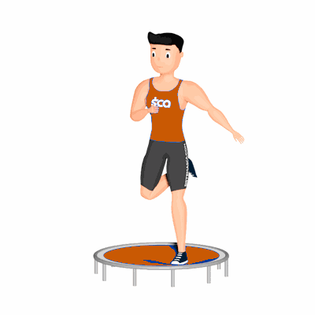

Calcanhar Atrás no Jump

O exercício auxilia na queima de calorias, fortalecimento dos músculos da perna e no equilíbrio do corpo.
Ficha Técnica
Tipo: Aeróbico
Grupo Muscular: Perna
Aparelho: Nenhum
Músculos: Nenhum
Como realizar
- Suba no Trampolim;
- Posicione os pés paralelos e em afastamento médio;
- Inicie o movimento flexionando um joelho até o calcanhar se aproximar do glúteo;
- Retorne a posição inicial e repita os movimentos alternando as pernas.
 RC STORE
RC STORE